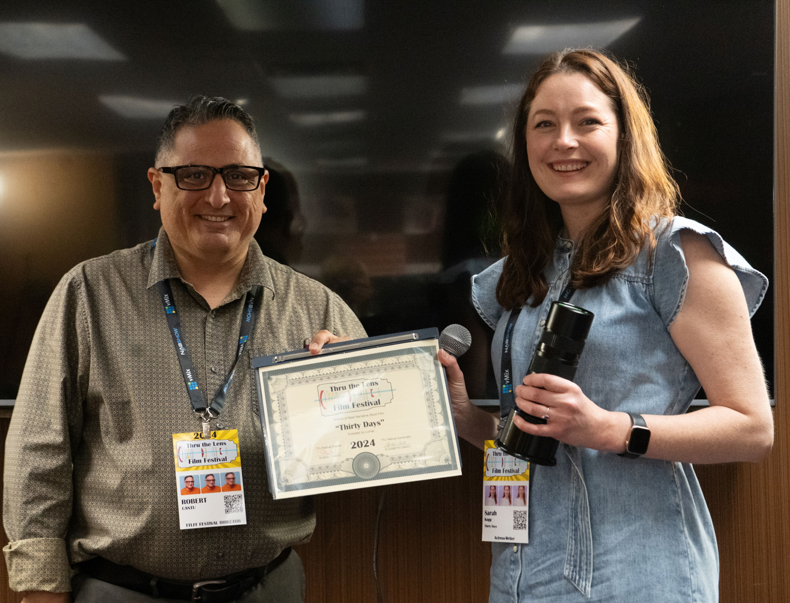
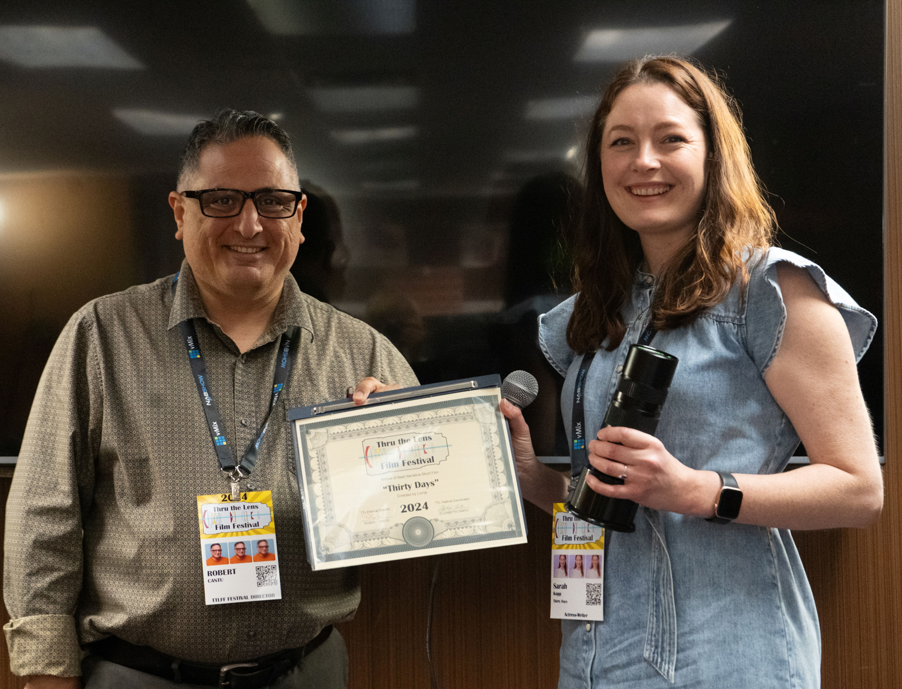

2024
Thru The Lens Film Festival
Amidst the glow of success, we rejoice in the fantastic premiere of the Thru the Lens Film Festival. Held in a perfect venue with top-notch screen and speaker, the festival provided ample space for filmmakers to connect and discuss their passions. It was heartening to see not only local filmmakers but also those from Houston, Dallas, San Antonio, and Chicago, Illinois, come together to celebrate. We're committed to making each filmmaker's experience fulfilling, with engaging Q&A sessions and roundtable discussions. Seeing the winners proudly display their unique trophies was a joyous moment for all. Looking ahead, we aim to make the next year's festival even more special. Thru the Lens Film Festival is all about spotlighting filmmakers and giving them the recognition they deserve. We hope ya'll consider joining us for the next TTLFF and being part of our vibrant community.
Festival's Photos


 
